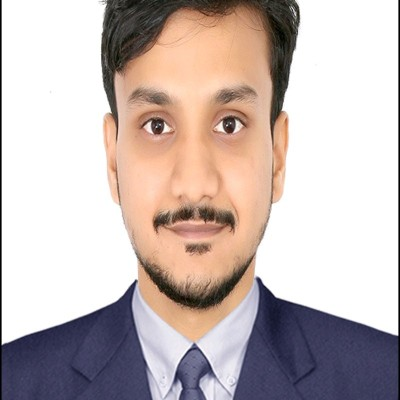

Dr. BM. Ashwin Desai
Co-Founder & CEO / CTO, Sensing & Applied AI Systems
DeepTech engineer unifying sensing hardware, applied AI products, and drug-discovery pipelines. IIT Madras alumnus leading technology strategy, convergent engineering, and product execution across AikyaNova.